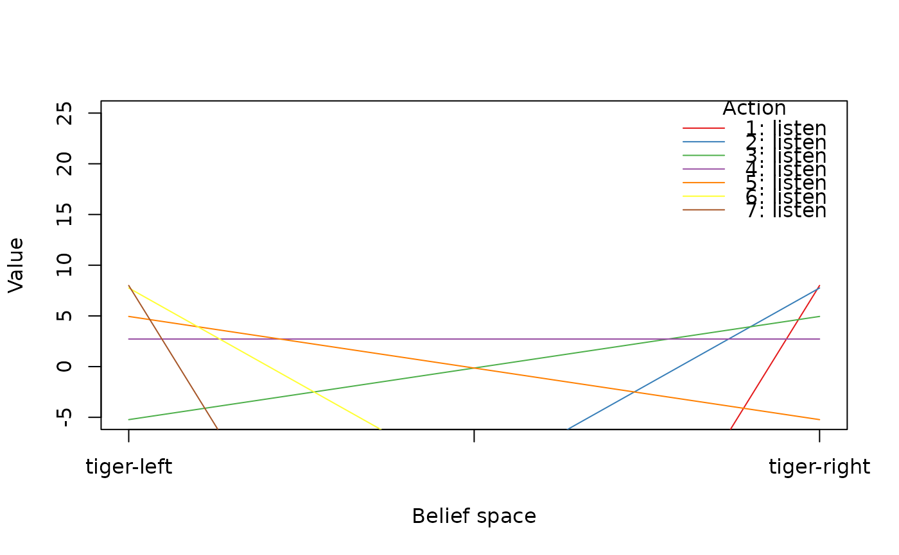
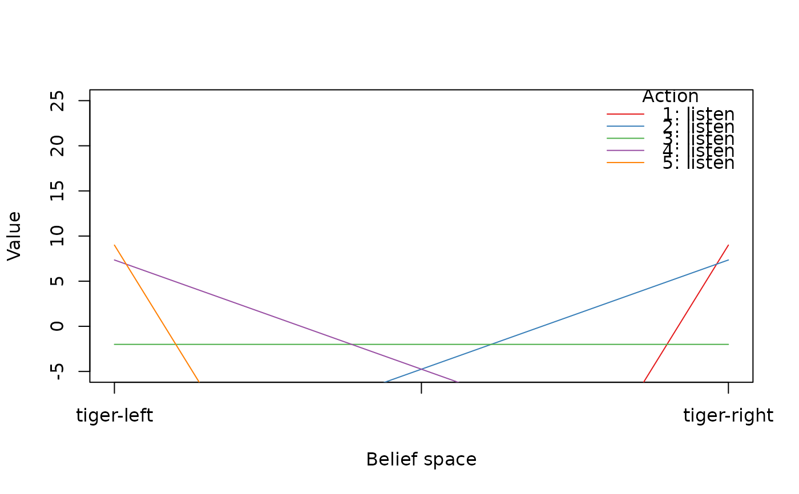
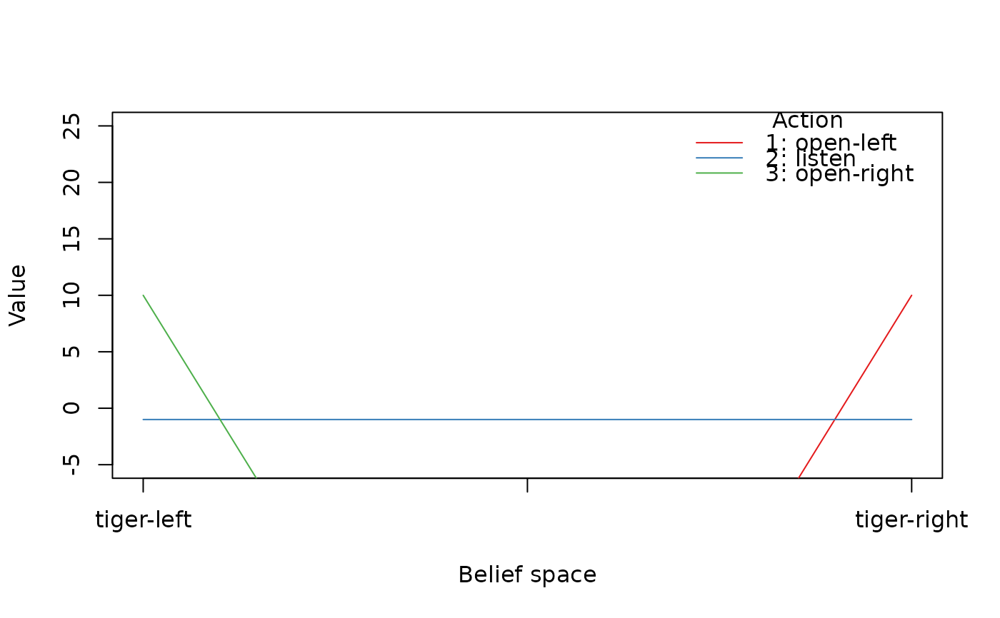

Extracts the value function from a solved model.
Extracts the alpha vectors describing the value function. This is similar to policy() which in addition returns the
action prescribed by the solution.
Usage
value_function(model, drop = TRUE)
plot_value_function(
model,
projection = NULL,
epoch = 1,
ylim = NULL,
legend = TRUE,
col = NULL,
lwd = 1,
lty = 1,
ylab = "Value",
...
)Arguments
- model
- drop
logical; drop the list for converged, epoch-independent value functions.
- projection
Sample in a projected belief space. See
projection()for details.- epoch
the epoch whose value function should be plotted. Use 1 for converged policies.
- ylim
the y limits of the plot.
- legend
logical; show the actions in the visualization?
- col
plotting colors.
- lwd
line width.
- lty
line type.
- ylab
label for the y-axis.
- ...
additional arguments passed on to
graphics::plot(), orgraphics::barplot()`.
Details
Plots the value function of a POMDP solution as a line plot. The solution is
projected on two states (i.e., the belief for the other states is held
constant at zero). The value function can also be visualized using plot_belief_space().
See also
Other policy:
estimate_belief_for_nodes(),
optimal_action(),
plot_belief_space(),
plot_policy_graph(),
policy(),
policy_graph(),
projection(),
reward(),
solve_POMDP(),
solve_SARSOP()
Other POMDP:
MDP2POMDP,
POMDP(),
accessors,
actions(),
add_policy(),
plot_belief_space(),
projection(),
reachable_and_absorbing,
regret(),
sample_belief_space(),
simulate_POMDP(),
solve_POMDP(),
solve_SARSOP(),
transition_graph(),
update_belief(),
write_POMDP()
Other MDP:
MDP(),
MDP2POMDP,
MDP_policy_functions,
accessors,
actions(),
add_policy(),
gridworld,
reachable_and_absorbing,
regret(),
simulate_MDP(),
solve_MDP(),
transition_graph()
Examples
data("Tiger")
sol <- solve_POMDP(Tiger)
sol
#> POMDP, list - Tiger Problem
#> Discount factor: 0.75
#> Horizon: Inf epochs
#> Size: 2 states / 3 actions / 2 obs.
#> Start: uniform
#> Solved:
#> Method: ‘grid’
#> Solution converged: TRUE
#> # of alpha vectors: 5
#> Total expected reward: 1.933439
#>
#> List components: ‘name’, ‘discount’, ‘horizon’, ‘states’, ‘actions’,
#> ‘observations’, ‘transition_prob’, ‘observation_prob’, ‘reward’,
#> ‘start’, ‘info’, ‘solution’
# value function for the converged solution
value_function(sol)
#> tiger-left tiger-right
#> [1,] -98.549921 11.450079
#> [2,] -10.854299 6.516937
#> [3,] 1.933439 1.933439
#> [4,] 6.516937 -10.854299
#> [5,] 11.450079 -98.549921
plot_value_function(sol, ylim = c(0,20))
 ## finite-horizon problem
sol <- solve_POMDP(model = Tiger, horizon = 3, discount = 1,
method = "enum")
sol
#> POMDP, list - Tiger Problem
#> Discount factor: 1
#> Horizon: 3 epochs
#> Size: 2 states / 3 actions / 2 obs.
#> Start: uniform
#> Solved:
#> Method: ‘enum’
#> Solution converged: FALSE
#> # of alpha vectors: 15
#> Total expected reward: 2.720000
#>
#> List components: ‘name’, ‘discount’, ‘horizon’, ‘states’, ‘actions’,
#> ‘observations’, ‘transition_prob’, ‘observation_prob’, ‘reward’,
#> ‘start’, ‘info’, ‘solution’
# inspect the value function for all epochs
value_function(sol)
#> [[1]]
#> tiger-left tiger-right
#> [1,] -102.0000 8.0000
#> [2,] -30.4725 7.7525
#> [3,] -5.2275 4.9475
#> [4,] 2.7200 2.7200
#> [5,] 4.9475 -5.2275
#> [6,] 7.7525 -30.4725
#> [7,] 8.0000 -102.0000
#>
#> [[2]]
#> tiger-left tiger-right
#> [1,] -101.00 9.00
#> [2,] -16.85 7.35
#> [3,] -2.00 -2.00
#> [4,] 7.35 -16.85
#> [5,] 9.00 -101.00
#>
#> [[3]]
#> tiger-left tiger-right
#> [1,] -100 10
#> [2,] -1 -1
#> [3,] 10 -100
#>
plot_value_function(sol, epoch = 1, ylim = c(-5, 25))
## finite-horizon problem
sol <- solve_POMDP(model = Tiger, horizon = 3, discount = 1,
method = "enum")
sol
#> POMDP, list - Tiger Problem
#> Discount factor: 1
#> Horizon: 3 epochs
#> Size: 2 states / 3 actions / 2 obs.
#> Start: uniform
#> Solved:
#> Method: ‘enum’
#> Solution converged: FALSE
#> # of alpha vectors: 15
#> Total expected reward: 2.720000
#>
#> List components: ‘name’, ‘discount’, ‘horizon’, ‘states’, ‘actions’,
#> ‘observations’, ‘transition_prob’, ‘observation_prob’, ‘reward’,
#> ‘start’, ‘info’, ‘solution’
# inspect the value function for all epochs
value_function(sol)
#> [[1]]
#> tiger-left tiger-right
#> [1,] -102.0000 8.0000
#> [2,] -30.4725 7.7525
#> [3,] -5.2275 4.9475
#> [4,] 2.7200 2.7200
#> [5,] 4.9475 -5.2275
#> [6,] 7.7525 -30.4725
#> [7,] 8.0000 -102.0000
#>
#> [[2]]
#> tiger-left tiger-right
#> [1,] -101.00 9.00
#> [2,] -16.85 7.35
#> [3,] -2.00 -2.00
#> [4,] 7.35 -16.85
#> [5,] 9.00 -101.00
#>
#> [[3]]
#> tiger-left tiger-right
#> [1,] -100 10
#> [2,] -1 -1
#> [3,] 10 -100
#>
plot_value_function(sol, epoch = 1, ylim = c(-5, 25))

plot_value_function(sol, epoch = 2, ylim = c(-5, 25))

plot_value_function(sol, epoch = 3, ylim = c(-5, 25))

if (FALSE) { # \dontrun{
# using ggplot2 to plot the value function for epoch 3
library(ggplot2)
pol <- policy(sol)
ggplot(pol[[3]]) +
geom_segment(aes(x = 0, y = `tiger-left`, xend = 1, yend = `tiger-right`, color = action)) +
coord_cartesian(ylim = c(-5, 15)) + ylab("Value") + xlab("Belief space")
} # }